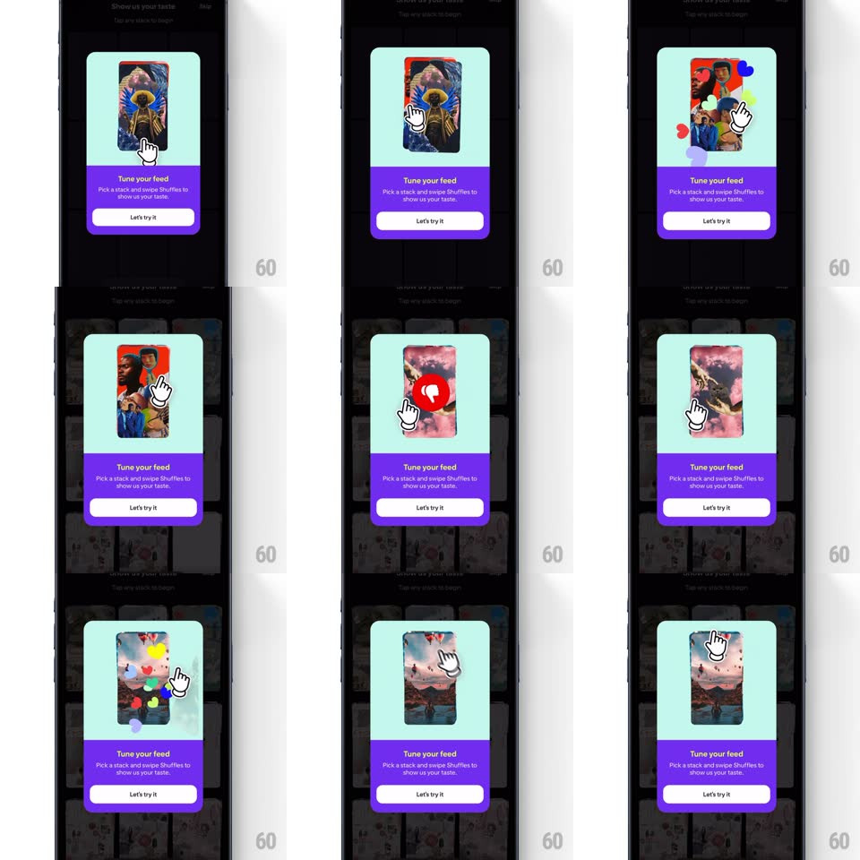

Media
Frame-by-frame

Rebuild this interaction 1:1: Shuffles' feed-swipe onboarding - the "Tune your feed" modal teaches card swiping: a finger cursor drags the demo cards left and right, likes pop floating hearts, and cards fly off the stack.

Rebuild this interaction 1:1: Shuffles' feed-swipe onboarding - the "Tune your feed" modal teaches card swiping: a finger cursor drags the demo cards left and right, likes pop floating hearts, and cards fly off the stack. ## Integration Integration: stack-agnostic spec - springs given as stiffness/damping, timed motions as duration + curve; map every value to your framework and animation library of choice. ## Scene A modal card over the dimmed feed: mint-green top area holding a small stack of collage cards, purple bottom area with "Tune your feed", "Pick a stack and swipe Shuffles to show us your taste.", and a white "Let's try it" pill. ## Motion spec Pattern: simulated swipe tutorial with reactions. - The demo loops inside the mint area: a white finger cursor grabs the top card (card lifts: scale 1.02, shadow deepens) and drags it right (card follows with rotateZ up to 12deg). - Crossing the like threshold pops a red heart badge on the card (scale 0 -> 1 with spring ~500/16, 250ms); release flings the card off right (400ms, ease-in) while a small heart floats up off it and fades. - The next card slides up in the stack (scale 0.95 -> 1, 250ms) and the finger demos a left swipe - same physics, card flies left with a grey "not for me" drift, no heart. - Cards cycle through 3-4 collages; the stack never empties (cards fade back in at the bottom). - The purple area and button stay static - all motion lives in the demo area. ## Calibration - The card rotation is coupled to drag distance - it tilts exactly as far as it's dragged. - Right = heart, left = neutral - the asymmetry is the lesson. ## Reduced motion Cards crossfade through the stack without drag physics. ## Don't miss - The card artwork is real collages (fashion, interiors, art) - each swipe shows different taste. - The floating heart after a like drifts up about 40px over 600ms before fading.